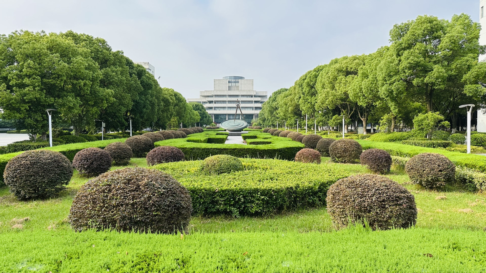
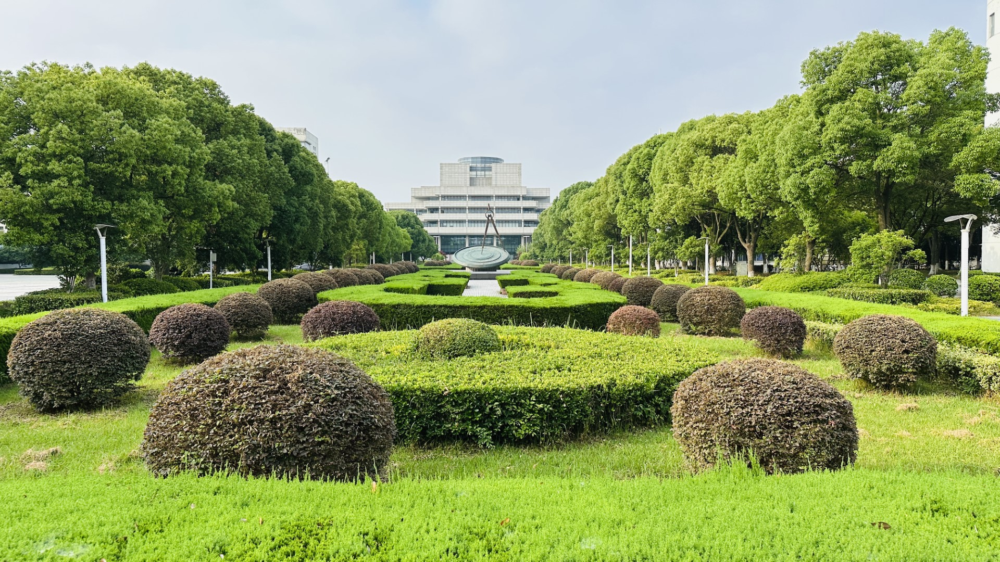

Summary
 I had the opportunity to take a few classes at Changshu, and spent a few weeks there. I learned something new every day, and had an enjoyable time there. Read More
This site describes my time at the Changshu Institute of Technology
 I had the opportunity to take a few classes at Changshu, and spent a few weeks there. I learned something new every day, and had an enjoyable time there. Read More